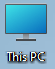

<!DOCTYPE html>
<html lang="en">
<head>
    <meta charset="UTF-8">
    <meta http-equiv="X-UA-Compatible" content="IE=edge">
    <meta name="viewport" content="width=device-width, initial-scale=1.0">
    <title>Try Windows 11</title>
    <link rel="shortcut icon" href="favicon.ico" type="image/x-icon">
    <link rel="stylesheet" href="style.css">
</head>
<body>
    <!-- <div class="computer"> -->
        <!--  -->
    <!-- </div> -->
    <!-- <div class="thispc"> -->
        <!--  -->
    <!-- </div> -->
    <div class="taskbar">
        
        
    </div>
    <div class = "startmenu">
        
    </div>
    <video autoplay muted id = "vid">
        <source src="video.webm" type="video/webm">
    </video>
</body>
<script src = "script.js"></script>
</html>